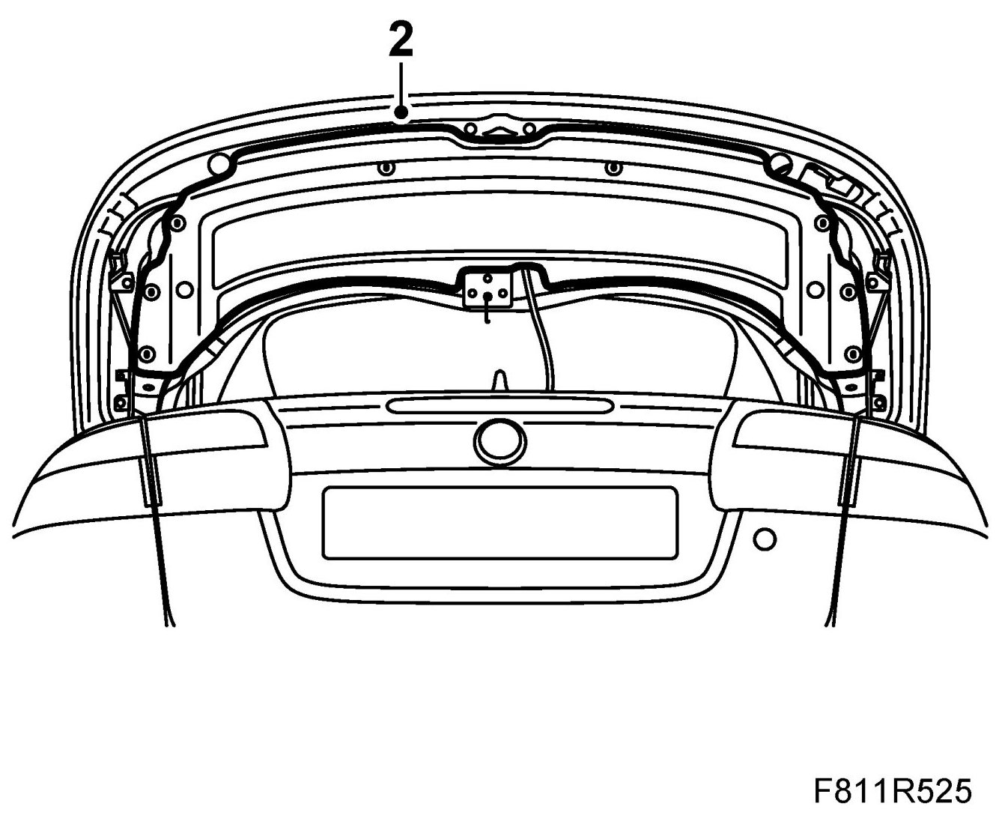
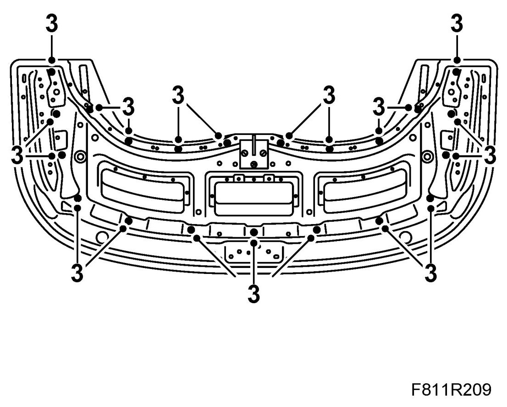
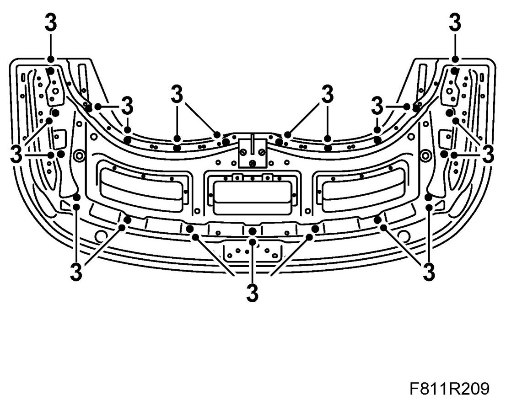

Soft Top Cover, Cover Strip
Soft Top Cover, Cover Strip
To remove
1. Open the soft top cover.
2. Remove the quick nuts from the soft top cover trim. Pull the trim from the velcro fasteners.

3. Remove the nuts from the moulding and cover.

4. Lift away the moulding.
5. Remove the cover strip by lifting it up at the front to loosen the studs. Then pull the cover strip backwards so that the hooks come loose from the soft top cover.
To fit
1. Place the cover strip on the soft top cover. Insert the hooks on the soft top cover and move the cover strip forward so that the studs fit in the soft top cover.
2. Fit the cover strip moulding.
3. Fit the nuts to the moulding and cover.

4. Position the soft top cover trim over the studs. Fit the nuts. Press the velcro in place.
5. Close the soft top cover.